6.1 Basic root-locus construction
e.g. 6.1.1
C(s)=K_p, \quad P(s) = \frac{1}{s(s+2)}
\begin{aligned}
\pi(s) &= s^2 + 2s + K_p\\
s &= -1 \pm \sqrt{1-K_p}\\
\end{aligned}
If K_p \le 0 , lose IO stability
If 0 \lt K_p \le 1 , we have two roots with negative real part
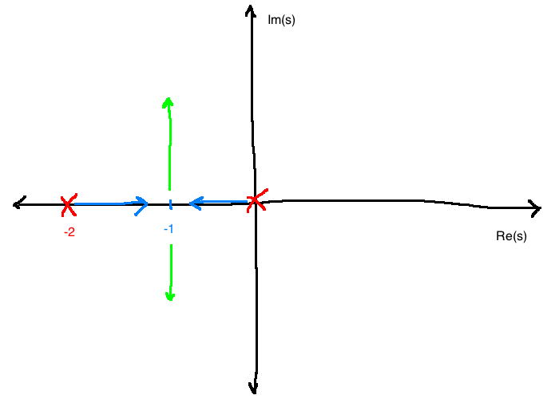rootlocuseg1
This root locus tells us that the system can go unstable with bad choices of K_p
From the diagram, we can qualitatively see that K_p should be such that \Im(s) of the poles \ne 0 , but not too big.
Matlab: use sisotool or rltool
Construction
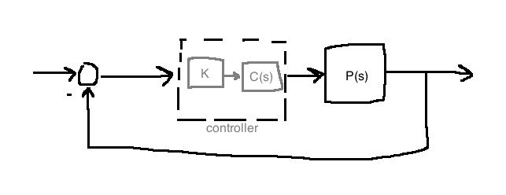
\pi(s) = \underbrace{D_pD_c}_{D(s)} + K\underbrace{N_pN_c}_{N(s)}
A root-locus diagram is a drawing of how the roots of \pi change as K is changed.
Assumptions:
C(s)P(s) properK \ge 0 D(s) and N(s) are monic (leading coefficient is 1)
Let n:=\deg(D(s)) , m:=\deg(N(s))
Rules
Roots of \pi are symmetric about the real axis
There are n “branches” (paths) of the root locus (since \deg(\pi)=n )
Roots of \pi are a continuous function of K
When K=0 , roots of \pi are equal to the roots of D
As K \rightarrow +\infty , m branches of the root locus approach the roots of N(s) (\pi(s) = 0 \Leftrightarrow \frac{N(s)}{D(s)}=\frac{-1}{K} )
The remaining n-m branches tend towards \infty . They do so along asymptotes:
Go through the point s=\sigma + 0j where \sigma = \frac{\sum \text{roots of } D - \sum \text{roots of } N}{n-m} (centroid)
Make angles \phi_1, ...,\phi_{n-m} with real axis given by \phi_k := \frac{(2k-1)\pi}{n-m}, k \in \{1, ..., n-m\}
Asymptote patterns: (fig. 6.4)
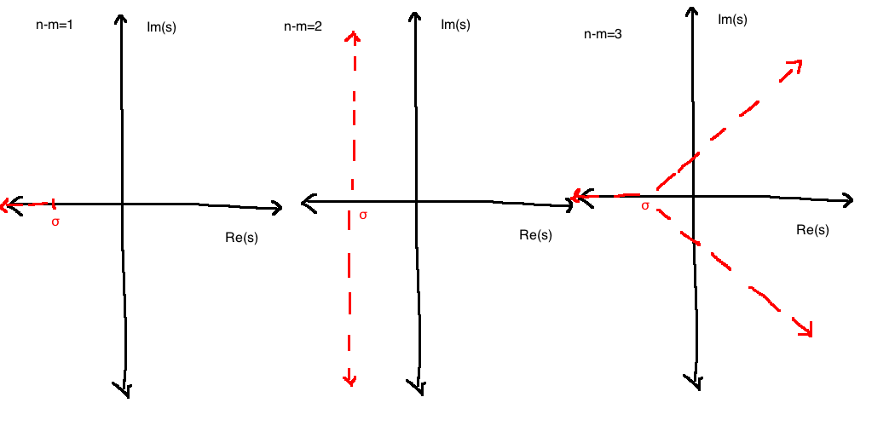
(“no-yes-no” rule) A point s_0 on the real axis is a part of the root locus if and only if s_0 is to the left of an odd number of poles/zeroes.
It follows from the fact that on the root locus, \angle N(s_0) - \angle D(s_0) = \angle \frac{-1}{K} = \pi
(angles of departure/arrival)
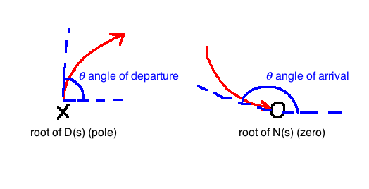
To compute, use \angle N(s) - \angle D(s) = \pi
\Rightarrow \angle (s-z_1) + \angle (s-z_2) + ... + \angle(s - z_m) - \angle (s-p_1) + ... + \angle (s-p_n) = \pi To compute the angle of departure at pole p_i , plug s=p_i into the above and solve for \angle (s-p_i) =: \theta_{p_i} .
Procedure for plotting root-locus
Given an n th-order polynomial \pi(s)=D(s)+KN(s)
Compute the roots \{z_1, ..., z_n\} of N(s) and place a circle at each location.
Compute the roots \{p_1, ..., p_n\} of D(s) and place an X at each location.
Use rule 7 (“no-yes-no”) to fill in the real axis
Compute centroid \sigma , label the point s=\sigma +j0 in \mathbb{C}
Compute and draw the n-m asymptotes
Compute angles using rule 8. Usually only needed for complex conjugate rots and repeated real roots.
Give a reasonable guess of how it looks (symmetric around real axis!)
e.g. 6.3.1
P(s)=\frac{1}{s^2+2s+5}, \quad C(s)=K\left(1+\frac{1}{0.25s}\right)
\begin{aligned}
\pi(s)&=N_cN_p+D_cD_p\\
&= s(s^2+2s+s)+K(s+4)\\
&=:D(s)+KN(s)\\
\end{aligned}
N(s)=s+4 \Rightarrow z_1=-4, m=1 D(s)=s(s^2+2s+s) \Rightarrow n=3, \{p_1, p_2, p_3\}=\{0, -1+2j, -2-2j\} “no-yes-no”
\sigma = \frac{0+(-1+2j)+(-1-2j)-(-4)}{3-1}=1 n-m=2 \Rightarrow \phi_1=\frac{\pi}{2}, \phi_2=\frac{-\pi}{2} Compute departure angle for p_2 (no need for p_3 , we know it from symmetry):
\pi(s)=D(s)+kN(s)=0 \Leftrightarrow \frac{N(s)}{D(s)}=\frac{-1}{K} \angle N(s) - \angle D(s) = \pi \angle(s+4)-\angle s - \underbrace{\angle(s+1-2j)}_{\theta_{p_2}}-\angle(s+1+2j) = \pi \theta_{p_2} = \angle (p_2+4) - \angle p_2 - \angle (p_2 + 1 + 2j) - \pi \theta_{p_2} = \angle(-3+2j)-\angle(-1+2j)-\angle 4j - \pi \theta_{p_2} = 7.125^\circ
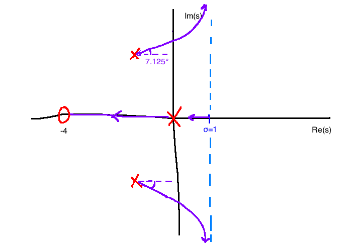eg621
e.g. 6.2.2
\pi(s)=D(s)+KN(s), \quad D(s)=s^3(s+4), \quad N(s)=s+1
n=4
m=1
\sigma = \frac{-4 - (-1)}{4-1} = -1
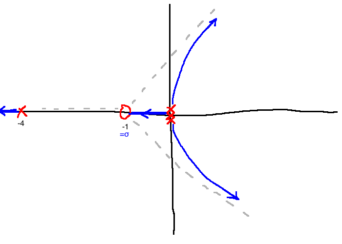eg622
e.g. Cart pendulum system
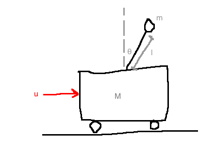rootlocuspendulum
\frac{Y(s)}{U(s)} = P(s)=\frac{\frac{1}{Ml}}{s^2 - \frac{g}{Ml}(m+M)}
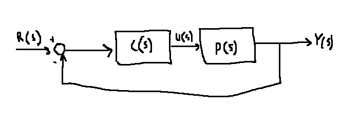pendulumblock
6.2.3 Proportional controller
Try C(s)=K_p . We get:
\begin{aligned}
\pi(s)&=D_pD_c+N_pN_c\\
&=s^2-\frac{g(M+m)}{Ml}+\frac{K_p}{Ml}\\
\\
D(s)&:=s^2-\frac{g}{Ml}(m+M)\\
N(s)&:=1\\
K&:=\frac{K_p}{Ml}\\
\end{aligned}
Asymptotes: \sigma = 0
n-m=2-0=2
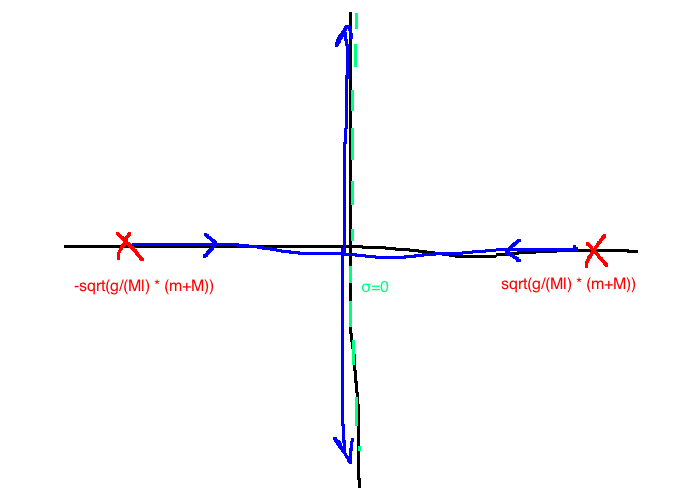pendulumproportional
Proportional control won’t work.
Matlab: suppose you have a controller P(s)C(s)=\frac{8(s+2)}{(s+1)(s+5)(s+10)} . In matlab:
2 ;1 -5 -10 ];8 ;% Zeroes, Poles, gain 6.2.4 P.D. Control
\begin{aligned}
C(s) &= K_p(1+T_ds)\\
&= K_pT_d\left(s+\frac{1}{T_d}\right)\\
\\
\pi(s) &= \underbrace{s^2- \frac{g}{Ml}(M+m)}_{D(s), \quad n=2} + \underbrace{\frac{K_pT_d}{Ml}}_{K}\underbrace{\left(s+\frac{1}{T_d}\right)}_{N(s), \quad m=1}\\
\end{aligned}
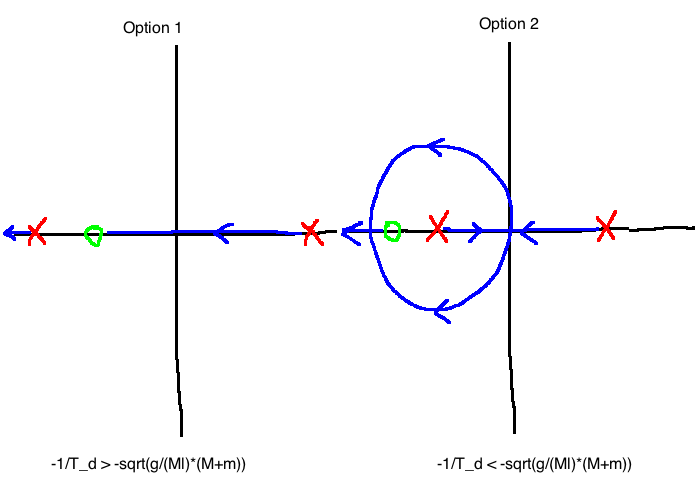pendulumpd
6.2.5 P.I. Control
\begin{aligned}
C(s)&=K_p\left(1+\frac{1}{T_is}\right)\\
&= K_p \frac{s+\frac{1}{T_i}}{s}\\
\\
\pi(s) &= \underbrace{s\left(s^2-\frac{g}{Ml}(m+M)\right)}_{D(s)} + \underbrace{\frac{K_p}{M_l}}_K \underbrace{\left(s+\frac{1}{T_i}\right)}_{N(s)}\\
\\
\sigma &= \frac{1}{2T_i}\\
\end{aligned}
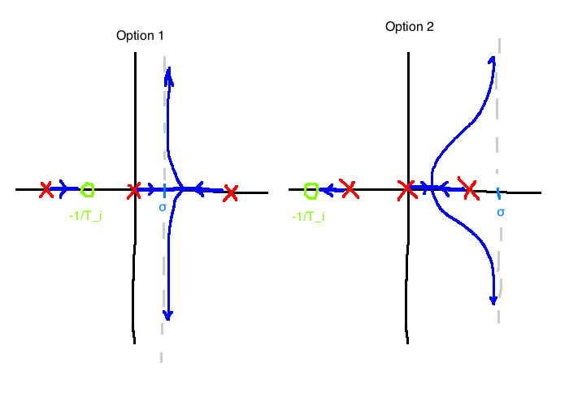pendulumpi
6.3 Non-standard problems
Non-unity feedback
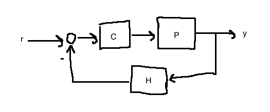nonunityfeedback
In this case, the characteristic polynomial is:
\pi(s)=N_pN_cN_h + D_pD_cD_h
Identify D , N , and K , and proceed as before.
Controller isn’t a linear function of the gain
Even if we can’t factor K out from C(s) , the characteristic polynomial can still be expressed in the form \pi(s)=D(s)+KN(s) , but now, D \ne D_pD_c and N \ne N_pN_c
e.g.
\begin{aligned}
P(s)&=\frac{1}{s(s+2)}\\
C(s) &= 10(1+T_ds)\\
\\
\pi(s)=D_pD_c+N_pN_c\\
&= \underbrace{s^2+2s+10}_{D(s)} + \underbrace{10T_d}_K \underbrace{s}_N\\
\\
\text{Observe:}\\
D(s)=s^2+2s+10 \ne D_pD_c\\
N(s)=s \ne N_pN_c\\
\end{aligned}
Then proceed as before.
Improper Loop Gain
\pi(s)=D(s)+KN(s)
Normally, \deg(D) \ge \deg(N) . In this case, we have the opposite: \deg(D) \lt \deg(N) .
\pi(s) = 0 \Leftrightarrow N(s) + \frac{1}{K}D(s)=0
Define:
\hat{D} := N, \quad \hat{N}:=D, \quad \hat{K}:=\frac{1}{K}
Do the usual root-locus using \hat{\pi}(s)=\hat{D}(s)+\hat{K}\hat{N}(s) . At the end:
Turn each X into an O
Turn each O into an X
Revertse arrows
e.g. 6.3.2
\begin{aligned}
P(s)&=\frac{1}{s(s+1)}\\
C(s)&= \frac{s+3}{\tau s+1}\\
\\
\pi(s)&=s(s+1)(\tau s+1)+s+3\\
&= s^2+2s+3+\tau s^2(s+1)\\
\\
\hat{D}(s)&=s^2(s+1)\\
\hat{N}(s)&=s^2+2s+3\\
\hat{K}&=\frac{1}{\tau}\\
\\
\hat{n}&=3, \quad \{0,0,-1\}\\
\hat{m}&=2, \quad \{-1 \pm \sqrt{2}j\}\\
\end{aligned}
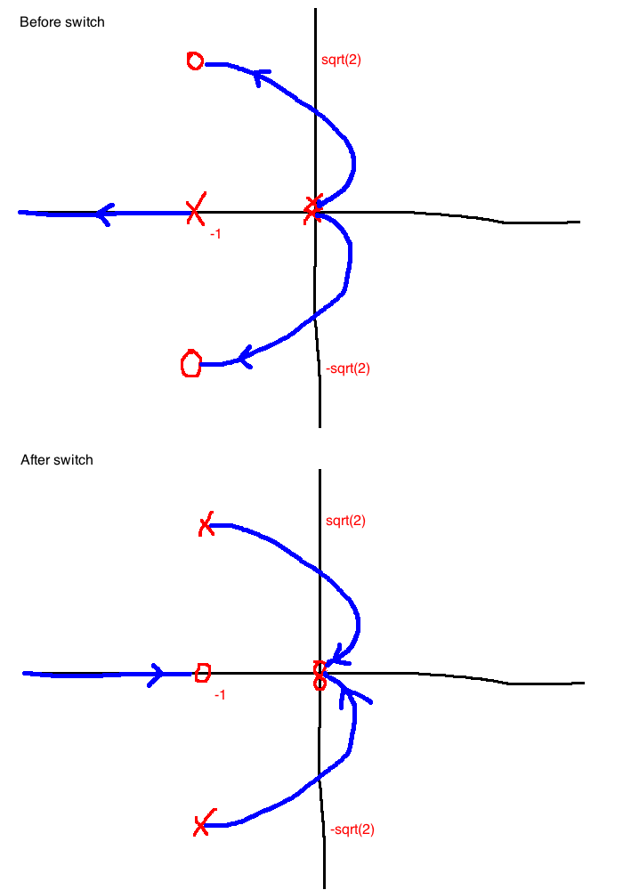rootlocusimproperloopgain
PREV LECTURE
NEXT LECTURE